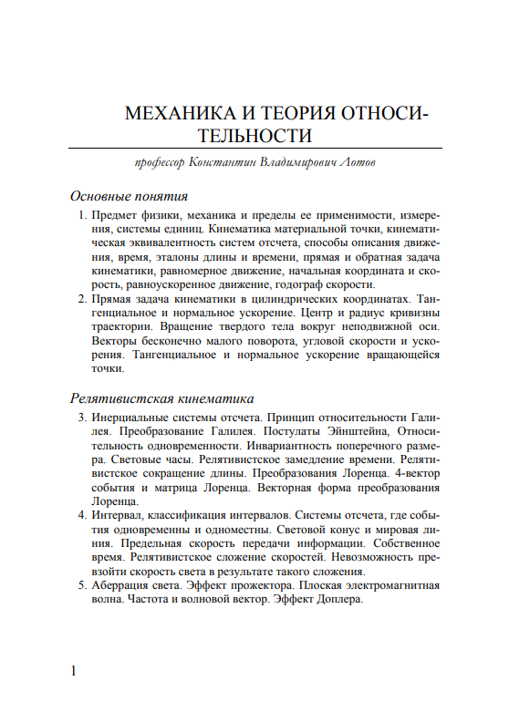
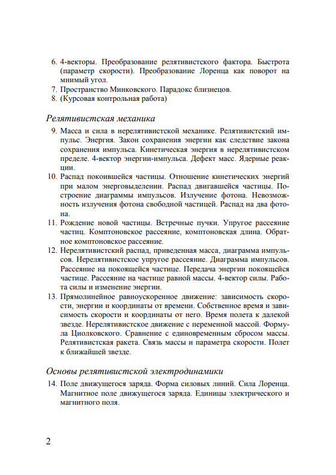

Библиотека
Научно-техническая
Механика и теория относительности.
Матвеев А.Н. | 2003
От издателя Данное пособие является первым томом курса общей физики. Изложение начинается с анализа релятивистских представлений о пространстве и времени и преобразований Лоренца. Наряду с классической кинематикой и динамикой излагаются основные положения и выводы релятивистской кинематики и динамики. 2-е издание (1-е — 1976 г.) переработано; расширено изложение фундаментальных вопросов механики, в большинство параграфов включены примеры, иллюстрирующие приложение теории к решению задач; все главы снабжены задачами для самостоятельного решения.
Ссылка на книгу  